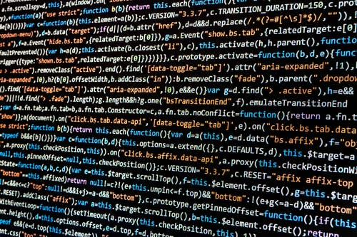
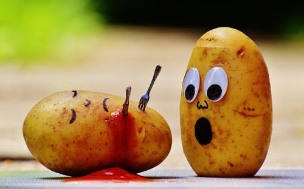
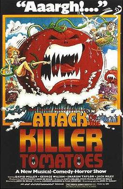

"strong" element to bold important text
"i" element is italic text
"mark" element highlights text
"small" element writes small text
"ins" element inserts text underlined
"sub" element inserts text just below the usual line "sup" element inserts text just above the usual line
"q" element puts text
in quotations
Written by Big3_l
visit us at digitalcareerinstitute.org
DCI Digital Career Institute
Lange Reihe 14, Hamburg
Germany


 JavaScript is a prototype-based, multi-paradigm, dynamic language, supporting object-oriented, imperative, and declarative (e.g. functional programming) styles. JavaScript (/ˈdʒɑːvəˌskrɪpt/), [8] often abbreviated as JS, is a high-level, interpreted programming language that conforms to the ECMAScript specification. It is a programming language that is characterized as dynamic, weakly typed, prototype-based and multi-paradigm. Alongside HTML and CSS, JavaScript is one of the core technologies of the World Wide Web.[9] JavaScript enables interactive web pages and is an essential part of web applications. The vast majority of websites use it,[10] and major web browsers have a dedicated JavaScript engine to execute it. As a multi-paradigm language, JavaScript supports event-driven, functional, and imperative (including object-oriented and prototype-based) programming styles. It has APIs for working with text, arrays, dates, regular expressions, and the DOM, but the language itself does not include any I/O, such as networking, storage, or graphics facilities. It relies upon the host environment in which it is embedded to provide these features.
| First Name | Last Name | Gender | Nationality - City | |
|---|---|---|---|---|
| Daniel | Lewis | Male | British | Hamburg |
| Abigail | Lewis | Female | British | Hamburg |
KILLER VEGITABLE SCIENCE FICTION FILMS . . . . |
|
|---|---|
|  |
Attack of the Killer Potatoes is a 1997 science-fiction children's story by Peter Lerangis. Its title spoofs the 1978 film, Attack of the Killer Tomatoes, and the film's sequels. The book's tagline reads, "Lock the doors, close the windows, warn the neighbors...". The book was published by the children's publishing division of Scholastic Press, Apple Paperback. The story tells of several potatoes exposed to chemicals. The chemicals cause the potatoes to rapidly grow in size, become clever and sapient, and begin an attack on humanity. In essence, the book is a parody of the creature-feature films of the 1950s, combined with the oddball satire of Attack of the Killer Tomatoes.Reception was mostly mixed. Critics felt it was a fun but nonsensical children's book. |
|
Attack of the Killer Tomatoes is a 1978 musical dark comedy horror film produced by J. Stephen Peace and John DeBello, and directed by John DeBello based upon an original idea by Costa Dillon. The screenplay was written by Dillon, Peace, and DeBello. The film is a spoof of B movies. Made on a budget less than US$100,000, the story involves tomatoes becoming sentient by unknown means and revolting against humanity. The success of the film led to three sequels, all co-written by the same three writers and directed by DeBello. |
 |